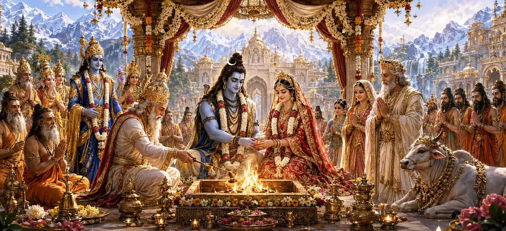

With all doubts removed and every obstacle overcome, the long-awaited moment finally arrived. The marriage of Lord Shiva and Goddess Pārvatī was not merely a royal wedding but a cosmic event destined to bring harmony to the universe. Gods, sages, celestial beings, and devotees gathered with joy to witness the sacred union of the Supreme Lord and the Divine Mother.
As the sacred hour approached, auspicious signs appeared throughout the heavens and the earth. Gentle breezes carried divine fragrances, flowers bloomed in abundance, and celestial music echoed through the skies. Everything in creation seemed to celebrate the approaching marriage.
Brahmā, Viṣṇu, Indra, and countless other deities assembled to witness the sacred ceremony. The sages occupied honored places, while celestial musicians and dancers prepared to glorify the occasion through hymns and celebrations.
King Himālaya and Queen Menā rejoiced beyond measure. Having realized Shiva's true greatness, they now considered themselves blessed beyond imagination. Their hearts overflowed with gratitude as they prepared to offer their beloved daughter in marriage.
Goddess Pārvatī appeared radiant with divine beauty and grace. Adorned with celestial ornaments and auspicious garments, she shone like the embodiment of purity, devotion, and eternal feminine power.
The marriage symbolized far more than the union of two divine beings. It represented the eternal harmony of Shiva and Shakti, consciousness and energy, wisdom and power. Through this sacred bond, cosmic balance would be restored and future divine purposes fulfilled.
The marriage of Shiva and Pārvatī represents the eternal union of divine consciousness and energy.
Their union restores balance and supports the welfare of the universe.
The sacred marriage becomes a source of blessings for all beings.
The assembled sages offered sacred prayers and blessings to the divine couple. They praised the greatness of Shiva and Pārvatī and prayed that their union would bring prosperity, righteousness, and spiritual upliftment to all worlds.
As the sacred marriage commenced, heavenly celebrations began throughout the celestial realms. Divine drums resounded, conch shells echoed, and showers of fragrant flowers descended from the skies in honor of the divine couple.
Unlike ordinary marriages, this divine union transcended worldly limitations. It symbolized an eternal truth that would inspire generations of devotees and remain one of the most sacred events remembered in the Shiva Purana.
The Divine Marriage teaches that true harmony is achieved when wisdom and power, devotion and knowledge, consciousness and energy unite. The sacred union of Shiva and Pārvatī reminds devotees that spiritual completeness arises through balance and divine grace.
News of the sacred marriage spread through heaven, earth, and the celestial realms. Gods, sages, gandharvas, and devotees rejoiced, knowing that this union would lead to the fulfillment of many divine purposes.
With the divine gathering complete and blessings flowing from every direction, preparations moved toward the formal wedding rites. The sacred ceremony itself was about to begin before the eyes of gods and sages.
"The union of Shiva and Shakti is the eternal source of harmony, creation, and divine grace."
The Divine Marriage has begun, and the entire universe rejoices at the sacred union of Lord Shiva and Goddess Pārvatī. With the celestial assembly gathered and blessings flowing from every direction, the wedding ceremonies now move toward their most sacred moments. Continue to the next chapter to witness The Arrival of the Bridegroom.